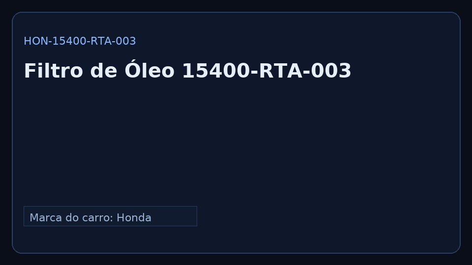

Código: HON-15400-RTA-003
Marca do carro: Honda · Marca da peça: Honda Genuine · Categoria: Lubrificação
Aplicação: Civic 1.8/2.0 • HR-V · Versão do manual: 1.0
Marca do carro: Honda · Marca da peça: Honda Genuine · Categoria: Lubrificação
Aplicação: Civic 1.8/2.0 • HR-V · Versão do manual: 1.0
Escaneie o QR da peça
Ou digite: https://D3Z33.github.io/toqueai_mvp/p/HON-15400-RTA-003.html
Dica: baixe o PDF para uso offline.